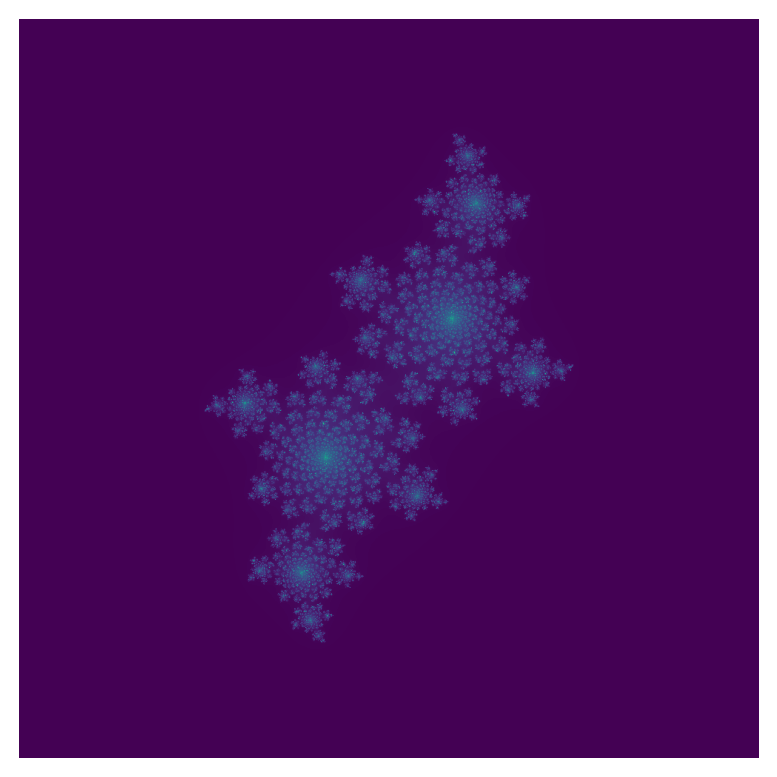

Numba
Scientific Computing
What is Numba?
Numbaaddresses a long-standing problem in scientific computing.- Writing code in Python, instead of C or Fortran, is fast.
- Running code in Python, instead of C or Fortran, is slow.
C/Fortran
- C and Fortran have been swimming around the periphery for some time.
- E.g. NumPy is written in C, uses C numbers.
- E.g. SymPy can print C/Fortran code for expressions.
- C is a general purpose language and the highest performance language in existence.
- Fortran, for “formula transcription”, is the foremost numerical computing platform (for performance).
Scripting
- Python is a scripting language.
- Write code in
.pyfile or withinpython - The
pythonprogram “runs” the code - No program is created.
- Write code in
Vs. C/Fortran
- C and Fortran are compiled languages.
- Write code.
- Call a program, a compiler, on the code.
- The compiler creates a program.
- Run the program.
Numba
- Numba is a compiler for Python.
- More than that - a jit (just-in-time) compiler.
- Numba looks and feels like Python, but under the hood is compiling Python code in fast, compiled languages.
- It is a good halfway step to avoid having to learn C/Fortran.
In its own words:
Why not Numba?
- Just learn C or Fortran
- Use Cython, an alternative Python compiler.
- Use SymPy print-to-C/Fortran
- Use GPU acceleration via PyTorch or Tensorflow for certain applications.
- The Meta and Google GPU-accelerated frameworks, respectively.
numba-cuda(NVIDIA GPU Numba) exists, but I haven’t seen it used much.
Install
Pip again!
- Nothing special here.
python3 -m pip install numba- Let’s try it out.
Decorators
- We need to introduce something called a decorator
- It’s a little note before a function definition that starts with
@- This means we’ll mostly write functions to use Numba.
- We’ll do an example.
Import
- Numba is essential a NumPy optimizer, so we’ll include both.
Test it
@jitis the much-ballyhoo’ed decorator.
x = np.arange(100).reshape(10, 10)
@jit
def go_fast(a): # Function is compiled to machine code when called the first time
trace = 0.0
for i in range(a.shape[0]): # Numba likes loops
trace += np.tanh(a[i, i]) # Numba likes NumPy functions
return a + trace # Numba likes NumPy broadcasting
_ = go_fast(x)Aside: pandas
- Numba does not accelerate pandas
- It is the “numerical” not “data” compiler.
- Don’t do this:
import pandas as pd
x = {'a': [1, 2, 3], 'b': [20, 30, 40]}
@jit(forceobj=True, looplift=True) # Need to use object mode, try and compile loops!
def use_pandas(a): # Function will not benefit from Numba jit
df = pd.DataFrame.from_dict(a) # Numba doesn't know about pd.DataFrame
df += 1 # Numba doesn't understand what this is
return df.cov() # or this!
_ = use_pandas(x)Modes
- Numba basically has two modes
object mode: Slow Python mode, works for pandasnonpython: Fast compiled mode, works for NumPy
- I wouldn’t bother with Numba unless you can use
nonpython- Basically Numba doesn’t do anything.
Timing
time
- It is hard to motivate Numba without seeing how fast it is.
- We will introduce
time
perf_counter()
timesupportstime.perf_counter()
Return the value (in fractional seconds) of a performance counter, i.e. a clock with the highest available resolution to measure a short duration.
- Let’s try it out.
NumPy
- I have have claimed NumPy vector operations are faster than base Python.
- Let’s test it.
Polynomial
- We will write a simple polynomial.
…served as the fundamental gravitational potential in Newton’s law of universal gravitation.
\(P_{10}(x)\)
- We take \(P_{10}(x)\), the 10th Legendre polynomial.
\[ \tfrac{146189x^{10}-109395x^8+90090x^6-30030x^4+3465x^2-63}{256} \]
- This uses only NumPy vectorizable operations:
Timing
- It is a straightforward matter to time Python vs NumPy
- Compare the times - NumPy 24x faster.
Compilation
Compiling
- To compile a Numba function, we have to run at least once.
- We will:
- Write a function.
- Time it with NumPy
- Add Numba decorators
- Run once
- Time it with Numba
- Helpfully, we timed
p_ten()with NumPy
Numba time.
- Declare with
@jit
- Compile by running once…
- Time on the same array
Maybe 10x?
- At first, not great!
- Let’s optimize.
Using jit
Parallel
- Declare
- Time
For me
- My device is about twice as fast when parallelized.
- I suspect much faster if I wasn’t developing these slides while running servers, etc. in the background.
Or…
- Or maybe I just need more numbers.
GIL
- Python has a “Global Interpreter Lock” to ensure consistency of array operations.
- All our array operations are independent, so we don’t have to worry about any of that, I think.
- We use
nogil
nogil=True
@jit(nopython=True, nogil=True, parallel=True)
def p_ten(x):
return (46189*x**10-109395*x**8+90090*x**6-30030*x**4+3456*x*2-63)//256
p_ten(np_arr) # Compile
t = time.perf_counter()
p_ten(np_arr)
ng = time.perf_counter() - t
ng, pt # no gil, parallel true(0.14797269995324314, 0.15015660016797483)- Doesn’t do much here.
Signatures
- Numba probably infers this, but it also benefits from knowing what kind of integer we are working with.
- These are like the NumPy types.
- Probably the biggest value…
(22357606058205098,
iinfo(min=-2147483648, max=2147483647, dtype=int32),
iinfo(min=-9223372036854775808, max=9223372036854775807, dtype=int64))- Fits in
np.int64
cfunc
- If we know the type of the values, we can use
cfuncinstead ofjit - Compiles to C, may be faster!
- Signatures are
out(in), so/isfloat(int, int)
Run it
from numba import cfunc, int64
@cfunc(int64(int64))
def p_ten(x):
return (46189*x**10-109395*x**8+90090*x**6-30030*x**4+3456*x*2-63)//256
p_ten(np_arr) # Compile
t = time.perf_counter()
p_ten(np_arr)
time.perf_counter() - t4.166833899915218- Meh. Works better with formulas than polynomials (exponentials and the like).
Aside: Intel
- I tried a few Intel packages Numba recommended.
- I got no noticeable changes from either, but mention them.
Intel SVML
- These slides were compiled on an Intel device.
- Numba recommends SVML for Intel devices.
Intel provides a short vector math library (SVML) that contains a large number of optimised transcendental functions available for use as compiler intrinsics
Threading
- For parallelism, Numba recommends
tbb(Intel) or OpenMP (otherwise). - They are not available on all devices.
- I could use
tbb
Floats
- Numba works just fine with floats!
float_arr = np_arr / 7
# add fastmath to decorator, change // to /
# `njit` means `jit(nopython=True`
from numba import njit
@njit(parallel=True)
def p_ten(x):
return (46189.*x**10.-109395.*x**8.+90090.*x**6.-30030.*x**4.+3456.*x*2.-63.)/256.
p_ten(np_arr) # Compile
t = time.perf_counter()
p_ten(np_arr)
float_t = time.perf_counter() - t
float_t0.9491886999458075Floats
- I used integers, but if we use floats we should use the
fastmathoption. - It allows greater inaccuracy (remember float rounding) in exchange for faster operations.
@njit(fastmath=True, parallel=True)
def p_ten(x):
return (46189.*x**10.-109395.*x**8.+90090.*x**6.-30030.*x**4.+3456.*x*2.-63.)/256.
p_ten(np_arr) # Compile
t = time.perf_counter()
p_ten(np_arr)
fast_t = time.perf_counter() - t
fast_t, float_t, fast_t/float_t, float_t/fast_t(0.13959049992263317,
0.9491886999458075,
0.14706296011594205,
6.799808729619044)“I’m so Julia.” - Charli XCX
Julia Sets
- The Julia set is a topic in complex dynamics.
Complex Quadratic Polynomials
- While not required, a common class of dynamics systems are complex-valued polynomial functions of the second degree, so we take, e.g.
Complex values
- In Python, complex values are denoted as multiples of
j(iis too frequently use).
- NumPy, they have
dtype=np.complex128
Common Form
- Often we refer to the these polynomials as follows:
\[ f_c(z) = z^2 + c \]
- We refer to the Julia set related to such a polynomial as:
\[ J(f_c) \]
Sets and Functions
- The Julia set is the elements on the complex plane for which some function converges under repeated iteration.
- For \(J(f_c)\) it is the elements:
\[ J(f_c) \{ z \in \mathbb{C} : \forall n \in \mathbb{N} : |f_c^nN(z)| \leq R \]
On \(R\)
- We define \(R\) as \[ R > 0 \land R^2 - R > |c| \]
- It is simple to restrict \(|c| < 2\) and use \(R = 2\)
Exercise
- Set a maximum number of iterations, say 1000
- Set a complex value \(|c| < 2\)
- Create a 2D array of complex values ranging from -2 to 2 (\(|a| < 2\))
- I used
reshapeandlinspacetogether.
- I used
- Iterate \(f_c\) on each value until either:
- Maximum iterations are reached, or
- The output exceeds \(R = 2\) - look at
np.absolute()
Result
- Use Numba to achieve higher numbers of iterations (which create sharper images).
- Use Matplotlib
imshowto plot the result.- Plot real component as
x, imaginary asy, and iterations as color.
- Plot real component as
- I recommend using \(c = -0.4 + 0.6i\) which I think looks nice.
- But you may choose your own \(c\)
\(f_c^n(z)\)
- Apply
f_c- Which, recall, is \(z^2+c\)
- To
z- The elements of the array.
- \(n\) times
- So \(f_c^2(z) = f_c(f_c(z))\)
Solution
Code
import numpy as np
import matplotlib.pyplot as plt
from numba import njit
@njit
def iterator(m, c, z):
for i in range(m):
z = z**2 + c
if (np.absolute(z) > 2):
return i
return i
# m: max iterations, c: c
def j_f(m, c):
real = np.linspace(-2,2,1000)
imag = (0 + 1j) * real
comp = real.reshape(-1,1) + imag
f_vec = np.vectorize(iterator, excluded={0,1})
return f_vec(m, c, comp)
# m: max iterations, c: c
def visualize(m, c):
arr = j_f(m,c)
plt.imshow(arr)
plt.axis('off')
plt.savefig("julia.png", bbox_inches="tight", pad_inches=0)
visualize(1000, -0.4 + 0.6j)